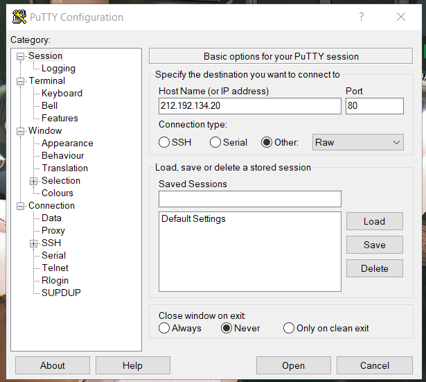
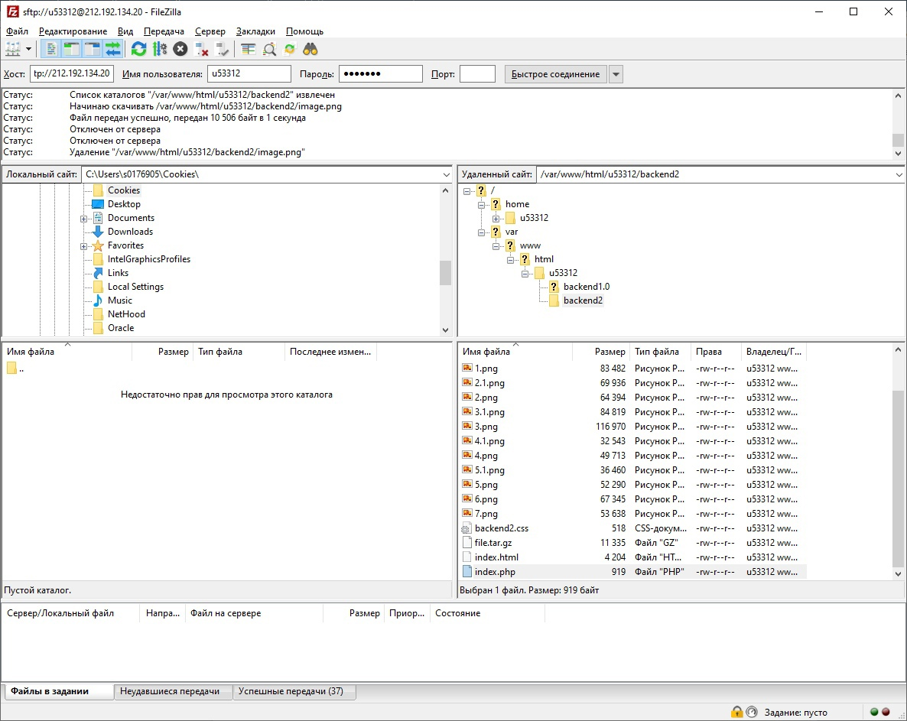
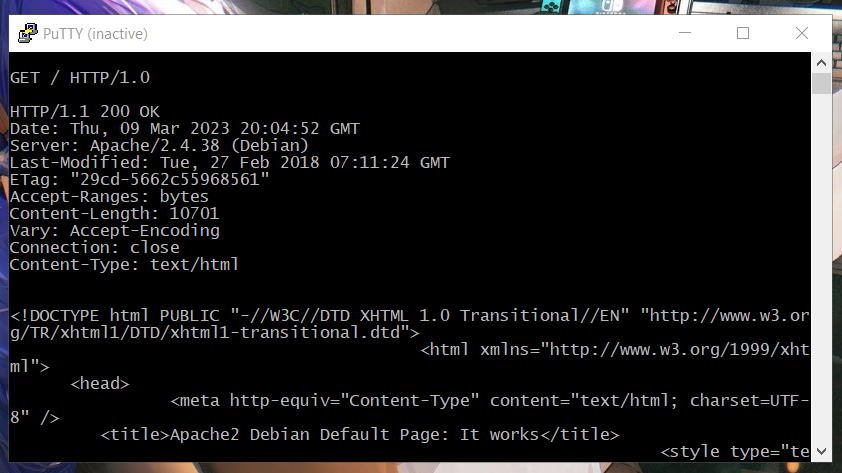
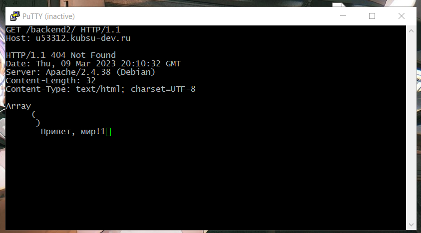
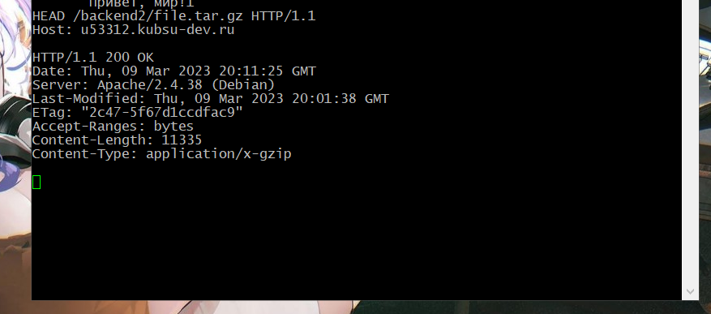
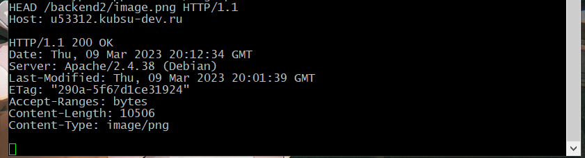
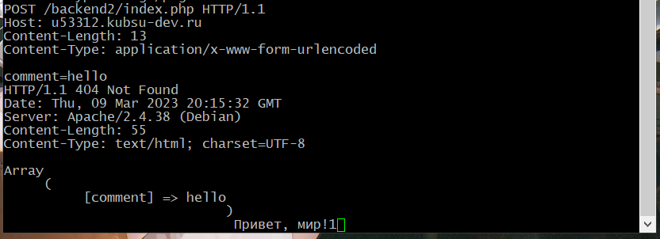
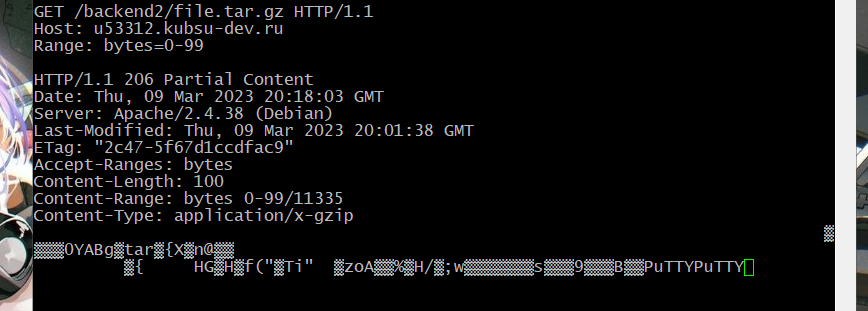
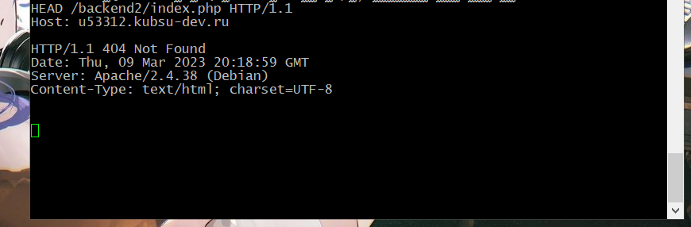

Шаг 1:
Подключение к учебному серверус помощью клиента Putty

Шаг 2:
Загружаем файлы с помощью Pytty и команды git clone и проверяем с помощью FileZilla.

Шаг 3:
Получение главной страницы методом GET в протоколе HTTP 1.0 GET — метод для чтения данных с сайта.
Например, для доступа к указанной странице.
Он говорит серверу, что клиент хочет прочитать указанный документ.

Шаг 4:
Получаю внутреннюю страницу методом GET в протоколе HTTP 1.1.
По умолчанию возвращет файл с названием index. Сервер вернул файл index.php.
Для HTTP 1.1 появился заголовок Host.

Шаг 5:
Определение размера файла file.tar.gz, не скачивая его.
Если сервер выдаёт таккую информацию - то она есть в HTTP-заголовках,
а именно в заголовке Content-Length.
Чтобы получить набор HTTP-заголовков, не нужно делать запрос GET
(он приведет к скачиванию файла). Достаточно сделать запрос HEAD.

Шаг 6:
Определение медиатипа ресурса image.png
Медиа тип (так же известный как Multipurpose Internet Mail Extensions или MIME тип)
является стандартом, который описывает природу и формат документа, файла или набора байтов.

Шаг 7:
Отправка комментария на сервер по адресу /index.php HTTP-метод POST предназначен для отправки данных на сервер.
Тип тела запроса указывается в заголовке Content-Type
Для HTTP запроса типа POST используя алгоритм application/x-www-form-urlencoded.

Шаг 8:
Чтобы получить часть файла, использую заголовок Range.
Заголовок позволяет запросить сразу несколько частей файла. Если сервер
поддерживает отправку по частям, то код ответа будет: 206 Partial Content.
Иначе, файл будет отправлен целиком с кодом 200. Заголовок ответа Accept-Ranges

Шаг 9:
Определение кодировки ресурса index.php
Метод HEAD аналогичен методу GET, за исключением того, что сервер ничего не посылает в
информационной части ответа. Метод HEAD запрашивает только информацию
заголовка о файле или ресурсе.
